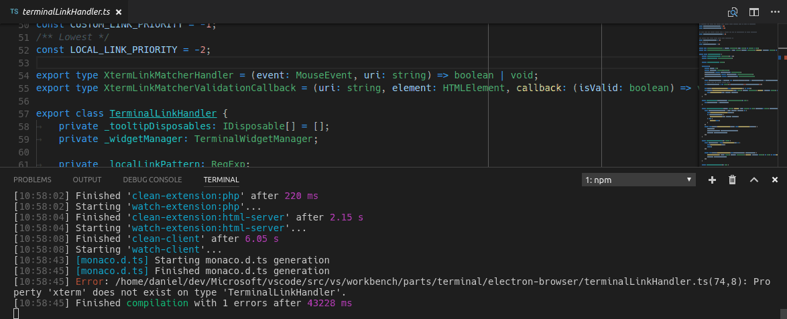

Update 1.12.2: 1.12の翻訳を追加し、問題を解決しました。
Update 1.12.1: .NETによるデバッグの問題を修正しました。
macOS上のちらつき回避策 外部のHigh DPIディスプレーで実行している場合
macOS上のぼやけるアイコンの回避策 特定の環境変数を設定している場合
Visual Studio Code 2017 4月のリリースへようこそ。今回の定期更新では、通常の新機能実装から私たちのプロセスとコードベースの改良へフォーカスをずらしています。私たちは、未解決の問題、解決済みのバグ、そして技術的負債の削減をすべく全てをレビューし審査しました。今回のリリースにも、まだまだあなたが興奮することがあると考えています。
今回のマイルストーンで、私たちは2199の問題をすべてのVS Codeレポジトリでクローズしています。ただ、私たちのクローズとユーザーのオープンはいたちごっこのようでもありました。結果的に1925の新しい問題があり、合計で274の減少になりました。比較として、3月は2218の問題が発生、うち1719の問題を解決したため合計369の増加でした。ですから全体として、4月は良かったのだといえます。
なお、github.com/Microsoft/vscodeで追跡している3775の問題のうち2368が機能要求です。私たちがすぐに仕事を失う必要はなさそうです :-)。
これらを考慮しても、リリースノートが空ではないと約束します:
- Workbench theming ready for authors - Create and share your own custom VS Code themes.
- New source control providers available - SCM extensions for TFVC, Perforce and Mercurial.
- Type checking in JavaScript - Catch JavaScript programming mistakes early with type checking.
- Improved China download speed - Users should see faster downloads (as much as 300x).
- Keyboard shortcuts editor - Improved keyboard shortcut search and conflict detection.
オンラインでリリースノートを確認するにはcode.visualstudio.comに移動してください。
VS Codeの重要な更新に関するアップデート情報は、リリースノートの次のセクションに配置しています。その他のアップデートは次の通りです:
- Workbench - macOS native Tabs and swipe gestures, terminal link line and column support.
- Languages - TypeScript 2.3, apply Markdown snippets on selections.
- Debugging - Context menu to edit watch expressions, better column breakpoints.
- Extension Authoring - Progress UI for long running operations, new completion item types.
Insiders: できるだけ早く新しい新機能を確認したいですか？夜間に更新するInsiders buildをダウンロードすれば、最新のアップデートをすぐに試すことが可能です。
Workbench
Workbench theming
3月のリリースから始まったWorkbenchのテーマ機能は、現在まで全力で開発されてきました。ほとんどの差異は解消され、テーマ作成者に’ready to use’とうれしく宣言します。
テーマは 、ツリーリスト(特にファイルエクスプローラーや提案ウィジェット)、差分エディター、アクティビティーバー、通知、スクロールバー、分割ビュー、ボンタンなどをサポートします。

すべての標準テーマは、新しい配色を利用するように更新しました。Theme Color Referenceですべての配色の完全なリストを確認できます。


新しいユーザー設定workbench.colorCustomizationは、workbench.experimental.colorCustomizationを上書きし、選択しているテーマ上でユーザーが配色を変更できるようにします。実験的な設定を既に使用している場合は、color id mapping tableを使用して、IDを新しいフォーマットにマッピングしてください。
Yeomanジェネレーターは、新しい配色テーマのフォーマットを使用するように更新されました。さらに、新しいコマンドDeveloper: Generate Color Theme From Current Settingsをコマンド パレットから使用すれば、Marketplaceで共有できるテーマへあなたのカスタム配色テーマを変更することが可能です。
また、GItHubのvscode-theme-generatorプロジェクトではテーマを簡単に作成する方法も検討しています。ジェネレーターの目的は、個々のワークベンチのカラーキーとTextMateスコープの複雑さを隠して、できるだけ少ない労力によってきれいなテーマを作成できるようにすることです。
vscode-theme-generatorを使用すれば、6つの色を定義するだけで次のようなテーマを作成できます:

Keyboard Shortcuts editor
Keyboard Shortcutsエディターで検索時、プラットホームの修飾キーをすべての用語で検索できるように改良されました。
meta,cmd,command,windowsctrl,controlalt,optionshift
また、優先順位による並び替えのなかで、競合しているキーを確認できるようになりました。

Source control
SCM APIがリリースされて以来、コミュニティーを対象としたソース管理の拡張機能にいい進展がありました 。Marketplaceで既に公開されている拡張機能の一部を次に紹介します:
- Visual Studio Team Services - TFVCのサポート
- Perforce for VS Code - Perforceの統合
- Hg - Mercurialレポジトリのサポート
私たちはこのAPIの可能性に非常に興奮しており、近い将来もっと多くの拡張機能が出てくることに期待しています！
Git
VS Code内のGit 拡張機能は多くの改良が進んでいます。この統合されたGitは、今後サードパーティーのSCMプロバイダーと同じextension pointsを介して実行するようになります。
Note: 6月より、従来の統合されたGitは完全に削除されます。それまでは、SCM: Enable Legacy Gitコマンドを使用して元の状態に戻すことができます。
macOS: Sierra Tabs
Electron updateの助けを借りて、ウィンドウの管理にmacOS Sierra tabの基本的なサポートを回復できました。window.nativeTabsを介して、再起動後有効にできます。有効にすると、OSの設定に応じて、新しいウィンドウを開いたときにそれを新しいタブで開きます。タブにアクセスするには、tab bar(View > Show Tab Bar)を表示してください。

Note: ネイティブなタブはカスタムタイトルでは利用できません。ネイティブタブを有効にしたとき、タイトルバーもネイティブなスタイルに変化します。
macOS: Mouse swipe to navigate
macOSのトラックパッドで三本指のスワイプジェスチャー(編集メモ: macosでの表記を知りません)を使用して、エディターの間を移動できるようにする、新しいworkbench.editor.swipeToNavigate設定を追加しました。これはGo > BackやGo > Forwardコマンドに似ていますが、ドキュメント内から生じるナビゲーションをスキップします。
Note: スワイプトリガーと同じ働きをする新しいコマンド(workbench.action.openPreviousRecentlyUsedEditorとworkbench.action.openNextRecentlyUsedEditor)を、キーバインドして実行することもできます。
Note: 現在三本指のスワイプジェスチャーのみサポートしています。トラックパッドの設定が次のように設定されていることを確認してください:
- Swipe between pages: Scroll left or right with three fingers.
- Swipe between full-screen apps: Swipe left or right with four fingers.
Integrated Terminal link line and column ranges
行と列の指定を持つファイルへのリンクがサポートされるようになりました 。

Languages
TypeScript 2.3
現在VS CodeにはTypeScript 2.3.2が付属しています。更新で、いくつかの新しい言語機能と重要なバグがいくつか修正されています。
Type checking for JavaScript files
またTypeScript 2.3では、プレーンなJavaScriptファイルにも型チェックを行います。これは一般的なプログラミングのミスを見つけ出す最適な方法です、またこれらの型チェックはJavaScriptで素早い修正を可能にする素晴らしい方法でもあります。

TypeScriptは.tsファイルと同じ.jsファイルの型を推測できます。
型を推測できなかった場合、JSDocコメントを利用して型を指定できます。TypeScriptがJavaScriptの型チェックのためにJSDocsを利用する方法はここで詳細を読むことができます。
JavaScriptの型チェックはオプションで、オプトインです。ESLintのような既存のJavaScript検証ツールは、新しいビルトイン型チェック機能とともに使用できます。
必要に応じて、異なるいくつかの方法で型チェックを始めることができます。
Per file
JavaScriptファイルで型チェックを有効にする最も簡単な方法は、ファイルのトップに// @ts-checkを追加することです。
|
// @ts-checkの使用は、いくつかのファイルで型チェックを行いたいが、コードベース全体に対しては有効にしたくないときに、いいアプローチと言えます。
Using a Setting
コードを変更せずにすべてのJavaScriptファイルの型チェックを有効にするには、ワークスペース設定に"javascript.implicitProjectConfig.checkJs": trueを追加します。これによりjsconfig.jsonやtsconfig.jsonプロジェクトで、一部に限らないJavaScriptファイルの型チェックが可能になります。
// @ts-nocheckコメントを使用することで、ファイル単位で型チェック出力を選ぶことができます:
|
また、JavaScriptファイル内の個々のエラーを、エラー行の前で// @ts-ignoreコメントを使用して無効化できます:
|
Using a JSConfig or TSConfig
jsconfig.jsonかtsconfig.jsonの一部であるJavaScriptファイルに型チェックを有効するなら、プロジェクトのコンパイラーオプションに"checkJs": trueを追加します:
jsconfig.json:
|
tsconfig.json:
|
これにより、プロジェクト内のすべてのJavaScriptファイルの型チェックが可能になります。// @ts-nocheckを使用することで、ファイルごとの型チェックを無効化できます。
JavaScriptの型チェックにはTypeScript 2.3が必要です。もし、現在選択しているTypeScriptのバージョンがわからない場合は*TypeScript: Select TypeScript Version+コマンドを実行して確認してください。
Change TypeScript versions without reloading VS Code
TypeScriptの現在のバージョンを変更するときとき、もはやVS Codeを再度読み込む必要はありません。
Markdown Preview and Zoom
Electronの更新により、Markdownプレビューとリリースノートのクリッピングに関する問題を修正しました。
Surround snippets for Markdown
マークダウン内でスニペットを使用すれば、素早くテキストを太字または斜体にすることができます。テキストを選択し、insert snippetコマンドを実行してください。Markdownの太字、イタリック、引用スニペットは、選択したテキストを変更するように更新されています。
スニペットを使用するためにキーバインドを設定することもできます:
|
Editor
Dynamic IntelliSense sorting
入力時に提案リストをつど並び替えるようになりました。これにより、必要な補完が常に上にあり、簡単に選択できるようになります。

Tasks
Grunt task autodetection
新しいターミナルのタスクランナーのために、Gruntの自動検出を実装しました 。新しいターミナルランナーでは、ワークスペース内に対応する両方のファイル(Gruntfile.js, gulpfile.js) が存在する場合、タスクはGruntとGulpの両方を検出するようになります。
さらに、proposed task APIは最適化されました。すでにこれを利用していた場合には、多少の変化が発生する可能性があります。
Debugging
Editing Watch expressions
コンテキストメニューを使用して、ウォッチ式を編集できるようになりました。

Node Debugging
Just My Code improvements
3つのリリースのためのNode.jsデバッガ、inspectorプロトコルで、ステップ実行時ファイルをスキップすることができました。今回のリリースで、legacyプロトコルも利用できるようになりました。スキップするファイルを制御するには、CALL STACKビュー内のスタックフレームでコンテキストメニューからToggle skipping this fileコマンドを使用します。

Column breakpoints improvements
特定の列へのブレークポイント設定は、Node 8(未リリース)をデバッグしているとき、Debugger for Chrome拡張機能とNode.jsデバッガーのプロトコルinspectorによって、サポートされます。列のブレークポイントは、⇧F9 (Windows, Linux Shift+F9)を使用するか、デバッグセッション中にコンテキストメニューを介して設定できます。

Extension Authoring
New APIs
新しいAPIをいくつか追加しました:
- 候補とシンボル項目の種類追加:
Event,Operator,TypeParameter。 - プレビューエディターとしてテキストドキュメントを開くことが可能になりました。つまり、別のドキュメントをひらくとき、タブを再利用することを意味します。これは
vscode.window.showTextDocument(doc, { preview: true})のようにして行えます。 - 時間のかかる操作実行のために、進捗状況を示す機能を追加しました。いまのところ、Source Controビューとステータスバーのwindow-global progress indicationで進捗状況を示すUIを定義します。
次のサンプルを確認してください:
|
Node.js update (6.x to 7.x)
Electronの1.6.6への更新で、拡張機能が利用するNode.jsのバージョンが6.4.0から7.4.0へ更新されました。Node.jsのメジャーアップデートによりいくつかの大きな変更がありますが、一般的に影響は軽微である必要があります。Node.jsの6から7への変更の完全なリストについてはoverviewを参照してください。
Electronの更新の結果として、Promise内のrejectionsが後から捕捉されたとしても、Node.jsランタイムによって予期せぬ未知の例外として処理されるようになりました。拡張機能をデバッグするときにこの動作は迷惑ですので、regular exceptionsから独立したpromiseのrejectionを制御するために新しい例外オプションを導入しました:

Debugger extensions
evaluateName attribute will become mandatory for Add to Watch and Copy Value actions
VS Code tries to implement the Add to Watch and Copy Value actions by using the data from the VARIABLES view and a JavaScript-biased heuristic for building expressions that can be used with the evaluate request.(編集メモ: よくわからなかった)
このアプローチではすべての言語で機能しないので、以前は変数にevaluateName属性を導入していました。もし変数のevaluateName属性が利用可能な場合、VS Codeはevaluate requetのために’as is’を使用します。evaluateNameがなければ古いアプローチに戻ります。
私たちは5月のリリースで完全にフォールバックを削除する計画です。ですからAdd to WatchとCopy Valueを今後行うためには、デバッグアダプターがevaluateName属性をサポートする必要があります。
New argument terminateDebuggee for disconnect request
オプションの引数terminateDebuggeeがdisconnectリクエストに追加されました。デバッグアダプターが supportTerminateDebuggee機能でこの機能を有効にした場合、クライアントはこれを使用して、デバッガが切断されたときにデバッグを終了するかどうかを制御できます。
Miscellaneous
Electron update
今回のリリースで、Electronは1.4.xから1.6.6に更新しました。これにより、Chromeのバージョンが53から56に、Node.jsが6.4から7.4に更新されました。特に、このアップデートではウィンドウ管理のためのmacOS Sierra tab(window.nativeTabs)と、よりよいクラッシュレポート生成プロセスを取り戻すことができました。また、macOS(background artifact)で見られたいくつかのグラフィックグリッチと、Windows上でUIエレメントに対するスケーリングが改良されています。
残念ながら、このアップデートでいくつかの後退(バグ？)も確認されており、これらの問題を解決する新しいElectronに移行するまで今しばらくお待ちください:
具体的には:
- 24981: Backspace can not erase the last character during Chinese/Japanese IME conversion (macOS)
- 24633: Unconfirmed text of CJK IME collapse to one character in Integrated Terminal
- 24643: Webview Flickering on Resize
- 24707: 1.6.2 update (<1.5) Completely breaks Dragon menu/submenu voice control (updated)
- 25700: Windows: dropdown selector empty after reload of window
Note:拡張機能の製作者であれば、Electronの更新による影響を Extension Authoringセクションで確認してください。
China downloads
VS Codeのダウンロード速度が遅いと報告してきた中国ユーザーのために、インストールと更新の操作性を向上しました。中国のネットワークサーバーにリリースを配布するので、速度を向上するにはその地域で入手する必要があります。私たちのテストケースでは、300xもの速度向上が見られました⚡️!
これらの改善は、VS Codeを直接MSのウェブサイトからダウンロードする場合や自動アップデートを受け取る場合に利用できます。
New Commands
| Key | Command | Command id |
|---|---|---|
| 次に利用したエディターを開く | workbench.action.openPreviousRecentlyUsedEditor | |
| 前に利用したエディターを開く | workbench.action.openNextRecentlyUsedEditor | |
| キーボードショートカットファイルを開く | workbench.action.openGlobalKeybindingsFile |
Notable Changes
- 5745: Webview: apply window.zoomLevel too
- 12473: macOS Sierra: background artifacts
- 24482: New Uncaught Exception when starting an extension debugging session
- 24979: Compound debug configurations not shown after first breakpoint is hit
- 13306: stepping over breakpoint appears to resume execution fully, vs stepping
- 24126: Quickly blinking cursor in terminal if you open and quit external app
- 24302: Use ctrl key as the modifier to enable copy when drag and drop on Linux
- 18351: Support navigation of problems by keyboard similar to search results.
今回の1.12アップデートで解決したバグと解決した機能要求 です。
拡張機能への貢献
私たちのチームは、いくつかのVS Code拡張機能の提供とメンテナンスに貢献しています。注目すべき拡張機能は：
- Go
- TSLint : We contributed to the tslint language server plugin and there is now a preview available to try out for VS Code.
- ESLint
- Docker
- Debugger for Chrome
- Mono Debug
- VSCodeVim
Thank You
最後になりましたが、VS Codeをより良いものへするために協力してくれた次の方々に多大なる感謝を込めて:
vscodeへの貢献:
- Gordon Mckeown(@gmckeown): Improved rendering of Seti icons #22667
- @admosity: Fix typo in inspectKeybindings.ts PR #25262
- Brian Schlenker (@bschlenk): Add noValuePreselect option to showInputBox PR #23827
- Burak Can (@burakcan): Suggestion widget: Fix overflowing text problem (fixes #20679) PR #20857
- Christopher Leidigh (@cleidigh)
- Dick van den Brink (@DickvdBrink): Fixed typo in terminal.contribution description PR #23784
- David Hewson (@dten): OK capitalisation fix PR #25005
- Eric Amodio (@eamodio): Adds editor options overloads to showTextDocument & vscode.diff PR #23641
- Elias Winberg (@elias-winberg): Remove class snippet comment PR #23209
- William Esz (@flagello)
- @gauss1314: Update typescriptMain.ts PR #24892
- Vakhurin Sergey (@igelbox): Added support for encodings for Git. PR #24911
- Ilie Halip (@ihalip): Small comment fix PR #25558
- Yuki Ueda (@Ikuyadeu): fix Solarized Light theme highlighting #24040 PR #24292
- Jordan Menard (@jordanmkasla2009)
- Jakub Synowiec (@jsynowiec): Add an option to enable/disable JSDoc autocomplete PR #23704
- Dominic Valenciana (@Kiricon)
- Phawin Khongkhasawan (@lifez): Add zenMode.hideActivityBar option PR #24499
- Magnus Hiie (@magnushiie): Expose insert..Braces rule in VS Code settings PR #21649
- Marek Lewandowski (@mlewand): Added support for home/end key in IntelliSense PR #20156
- Peter Juras (@peterjuras): Remove “JOAO” from Readme title PR #24491
- @QwertyZW: Let the widgetactions debug UI reflect the state of a focused thread PR #23878
- Rishii7 (@rishii7)
- Rômulo Guimarães (@romulo1984): Update Exec param at code.desktop PR #24523
- Seivan Heidari (@seivan): Fixes #4803: Adding support for swipe gestures on macOS. PR #23663
- Tereza Tomcova (@the-ress): Fixes #13905: Set relaunch command for window PR #15407
- Thomas Rayner (@ThmsRynr): Fix #24971. PowerShell Extension .bat & .exe Syntax Highlighting Error PR #24973
- Naveen Kumar (@timbanaveen)
language-server-protocolへの貢献:
- Damien Guard (@damieng): Correct log message heading in protocol v1 PR 186
- Lucian Wischik (@ljw1004): Change “utf8” to “utf-8” with a hyphen PR 199
- cxxxr (@cxxxr): small corrections PR 205
- Vlad Dumitrescu (@vladdu): small corrections PR 207
vscode-languageserver-node
- Cam (@trixnz): Add return value to getEnvironment(). PR #189
- Guillaume Martres (@smarter): Fix a single typo PR #196
- Hyo Jeong (@asiandrummer): fix typo PR #200
Contributions to vscode-css-languageservice
- Dominic Valenciana (@Kiricon): Added @error support for sass PR #24
- Ryan O’Connor (@rocifier): added unit tests for real selector formatter and fixed indentation PR #26
Thank you to our localization contributors
今回のリリースでcommunity localizationを開いたところ、世界のユーザーから多くの反応がありました。現在Transifex VS Code projectチームには100人以上のメンバーがいます。新しい翻訳の提供、翻訳への投票、プロセスの改善案による貢献に感謝します。
このリリースでトップ貢献者のスナップショットです。貢献者のリストを含むプロジェクトの詳細についてはhttps://aka.ms/vscodeloc.を参照してください。
- フランス語: Vincent Biret.
- イタリア語: Piero Azi, Alessandro Burato, Giuliano Latini, Gianluca Bertelli.
- ドイツ語: Sascha Corti, Jens Suessmeyer, Christian Gräfe, Markus Weber.
- スペイン語: German Sak, Santiago Porras Rodríguez, José M. Aguilar, Alberto Poblacion.
- ロシア語: Aleksey Nemiro, Kirill Moskvichev, Anton Afonin, Артем Мельниченко, Serge Rodionov, Andrei Pryymak.
- 日本語: Yuichi Nukiyama, EbXpJ6bp.
- 中国語(簡体字): Joel Yang, Ying Feng, YF.
- 中国語(繁体字): Alan Tsai.
次の言語はVS Codeに含まれていませんが、ここでも作業を行っています。5月の定期更新では、これら言語がVS Codeへの言語統合の基準を満たしているかどうかを検証します。
- ポルトガル語(Brazil): Bruno Sonnino, Felipe Caputo, Rodrigo Crespi, Roberto Fonseca, Marcelo Fernandes, Roberto Nunes, Rodrigo Romano, Luan Moreno Medeiros Maciel, Ilton Sequeira, Douglas Eccker.
- オランダ語: Jeroen Hermans, Gerjan.
- ポーランド語: KarbonKitty, Lukasz Korowicki, Paweł Sołtysiak, Jakub Drozdek.
- スウェーデン語: Joakim Olsson.
- トルコ語: Adem Coşkuner, Serkan Inci, Sertac Ozercan.
回避策
macOSのちらつき
外部のHigh DPIモニターを使用してるときに、VS Codeのちらつきが発生することがあります。#25934。この問題の回避策はユーザー設定で"editor.disableTranslate3d": trueを設定することです(これにより警告がでますが、VS Codeはこの設定をまだ受け入れるので問題ありません)。
macOSのぼやけたアイコン
この問題は、VS Codeを起動したときに特定の環境変数が設定されている場合に起こります。#24820。この問題の回避策は、macOSドックからVS Codeを起動するか、ターミナルから起動する前にLC_ALL環境変数(export LC_ALL=)をクリアすることです。Insidersビルドでは、この回避策を適用し、LC_ALLをクリアします。